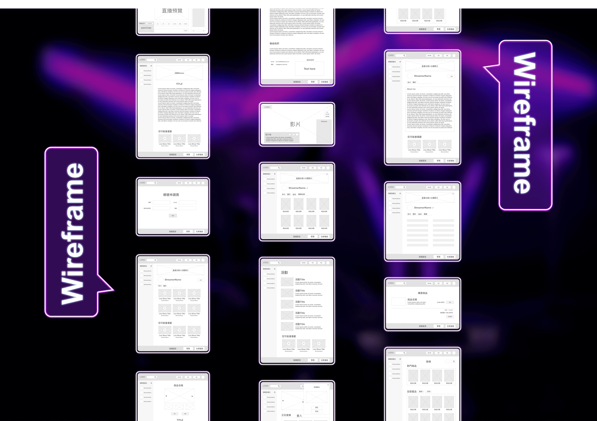
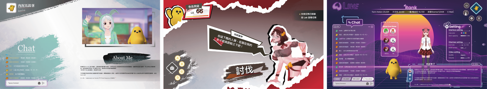

Vtuber Streaming Web
Roles: Researcher / Commuication / Prototype
Conceptualized and proposed a unique platform idea for Vtuber enthusiasts that goes beyond text-based interactions by allowing creators to invite their fans to co-stream. Additionally, envisioned a cutting-edge platform offering creative freedom to Vtubers, leveraging the diverse capabilities of the Web3 industry and partnering with a prominent adult industry company in Mandarin-speaking regions.
As a result of these insights, we made the strategic decision to develop an unrestricted streaming platform that caters to both Vtuber creators and adult content enthusiasts.
Problem Statement
Currently, there is no dedicated platform that fully caters to adult VTubers, allowing creators to fully express themselves. The majority of existing streaming platforms impose numerous policy restrictions, hindering creators from broadcasting freely and with peace of mind.
How might fans interact with their favorite Vtuber but not only by texting?
Conceptualized and proposed a unique platform idea for Vtuber enthusiasts that goes beyond text-based interactions by allowing creators to invite their fans to co-stream. Additionally, envisioned a cutting-edge platform offering creative freedom to Vtubers, leveraging the diverse capabilities of the Web3 industry and partnering with a prominent adult industry company in Mandarin-speaking regions.
Wireframe
Difficulties
How might browsers customize their UI for browsers and also make it easy for browsers and streamers to interact with others?
Our vision entails crafting a unique 3D environment where Vtuber models seamlessly come to life on the screen, allowing guests to navigate within the space. Despite numerous iterations, I aimed to break away from conventional designs that closely resembled other web browsers. It was a chance encounter with MMO RPG game UIs that sparked the inspiration for our ultimate solution—a full-screen streaming UI for browsers. This innovative interface empowers users to toggle function boxes on and off and customize their layout by arranging these function boxes as they see fit.
Design Variations
MVP
I designed the prototype using XD, HTML, CSS, and JS, collaborating with back-end engineers to develop the MVP for functional testing. The testing phase involved approximately 100 team members at our Taipei-based company. Our primary objective was to facilitate user interactions with Vtubers, achieved through the following key features:
- Enabled 100 users to access streams using their cryptocurrency wallet addresses.
- Offered customizable function box placements for user comfort.
- Implemented a chat bar for seamless communication.
- Enabled user donations to streamers.
- Facilitated user entry into streams through streamer invitations.
This project's inspiration stems from several observations. Twitter and Youtube have implemented restrictions on content creators due to adult content policies. Additionally, Chaturbate, a prominent adult streaming platform, lacks a dedicated space for Vtuber creators. Furthermore, the search trend on Pornhub for "Hentai" surged to the top position in 2022. Leveraging our NFT expertise within the adult industry, we decided to create an unrestricted streaming platform catering to both Vtuber creators and adult content enthusiasts.
Feedback
Achieved a remarkable 97% success rate in meeting project goals, with an impressive 93% of users reporting highly positive experiences. An additional 5% expressed satisfaction, while only 2% considered the product less favorable. Feedback from users who encountered difficulties primarily revolved around cryptocurrency wallet connection issues and locating the sign-in option for joining streamer invitations. In response, I strategically relocated the link button, reducing the process to just two simple steps for improved user accessibility.